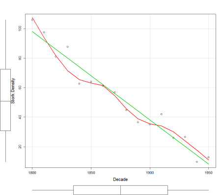
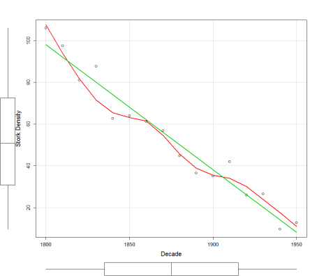
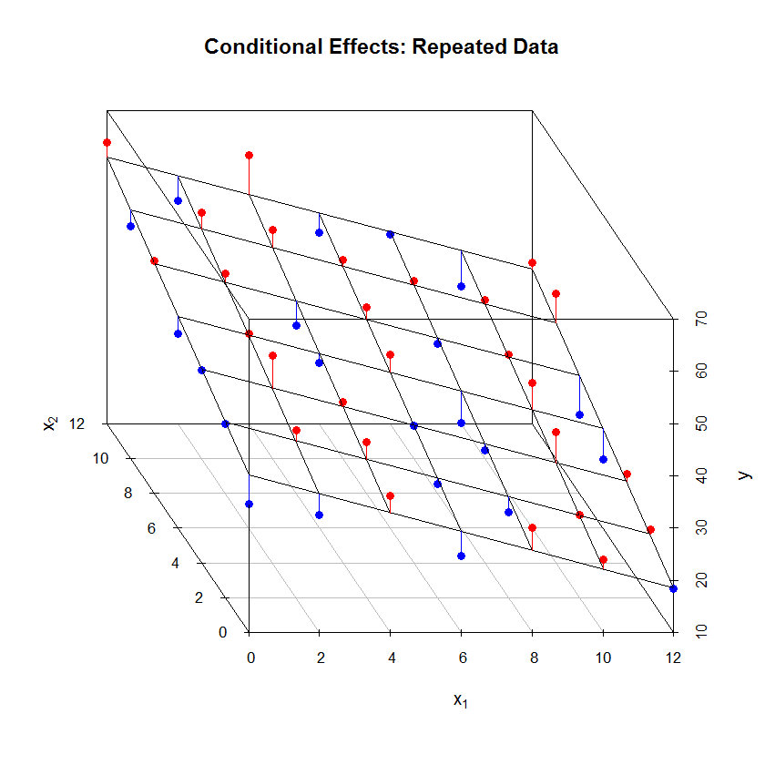
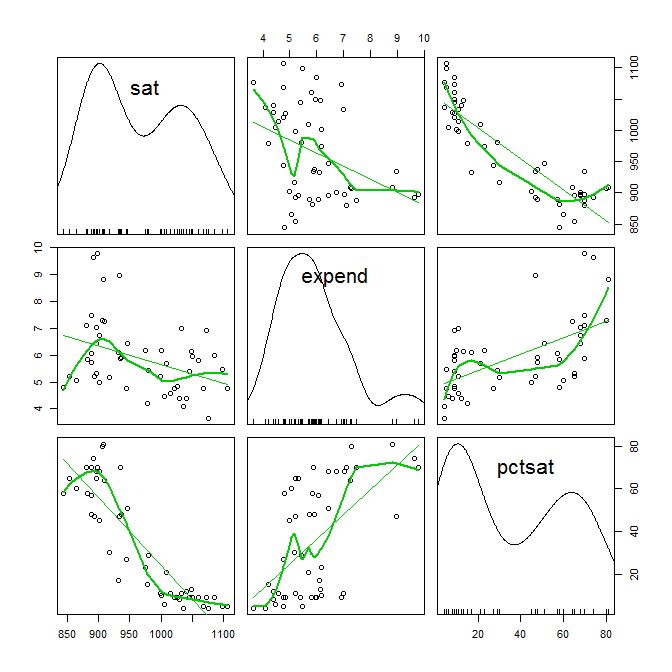
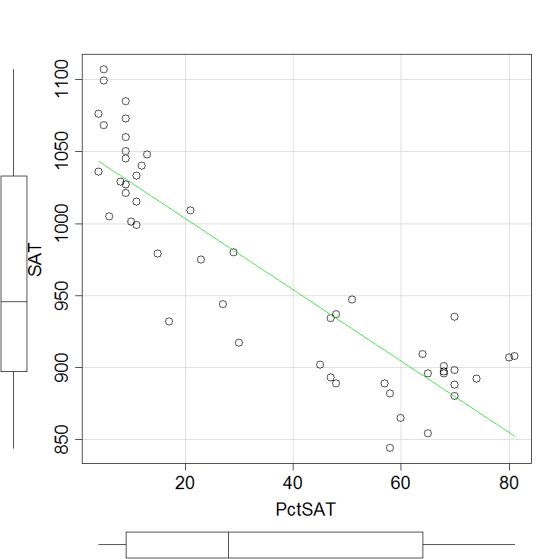
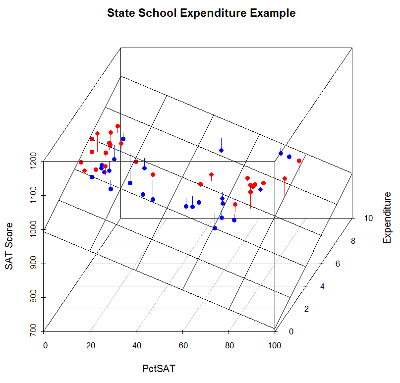
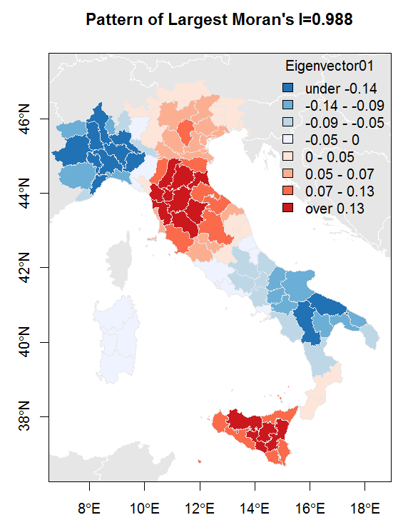
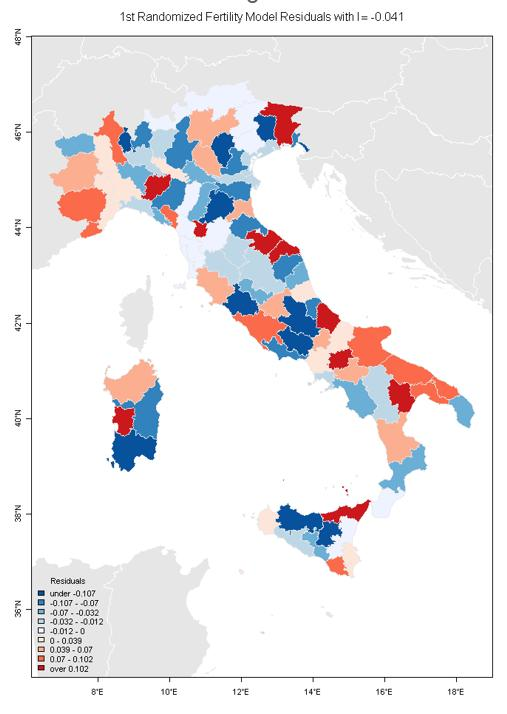

Example: Prediction equation with three independent variables
\[\hat{Y} \leftarrow b_0 + b_1 \cdot X_1 + b_2 \cdot X_2 + b_3 \cdot X_3\]
Multiple regression allows to control for any confounding effects that a variable may have on the dependent and other independent variables in the model.
Multiple regression combines the influences of several independent variables on a dependent variable.
Control for Confounding: Revisit the Stork example

Bivariate Regression Model Output:
lm(formula = birth ~ stork, data = myStork)
Coefficients:
Estimate Std. Error t value Pr(>|t|)
(Intercept) 1.939020 0.168849 11.48 1.64e-08 ***
stork 0.046458 0.002807 16.55 1.37e-10 ***
---
Signif. codes: 0 '***' 0.001 '**' 0.01 '*' 0.05 '.' 0.1 ' ' 1
Residual standard error: 0.317 on 14 degrees of freedom
Multiple R-squared: 0.9514, Adjusted R-squared: 0.9479
F-statistic: 274 on 1 and 14 DF, p-value: 1.372e-10lm(formula = birth ~ stork + decade, data = myStork)
Coefficients:
Estimate Std. Error t value Pr(>|t|)
(Intercept) 45.640053 10.678527 4.274 0.000906 ***
stork 0.010918 0.008895 1.227 0.241429
decade -0.022300 0.005449 -4.093 0.001270 **
---
Signif. codes: 0 '***' 0.001 '**' 0.01 '*' 0.05 '.' 0.1 ' ' 1
Residual standard error: 0.2175 on 13 degrees of freedom
Multiple R-squared: 0.9788, Adjusted R-squared: 0.9755
F-statistic: 299.5 on 2 and 13 DF, p-value: 1.338e-11For two independent variables the predicted values \(\hat{Y} = b_0 + b_1 \cdot X_1 + b_2 \cdot X_2\) will be on a linear plane.
This surface is anchored in the mean point of \(\bar{Y}\), \(\bar{X}_1\) and \(\bar{X}_2\), which is always in the center of the surface.
The plane will pass through intercept \(b_0\) when \(X_1 = 0\) and \(X_2 = 0\).
The slope along the \(X_1\)-axis is \(b_1\) and along the \(X_2\)-axis \(b_2\), respectively.

The data for this example can be found in the SPSS file STATESCHOOL.sav. See Gruber (1999) for more information about this example.
\[SAT = f(Expend, PctSAT)\]
rcorr.adjust(StateSchool[ ,
c("Expend","PctSAT","SAT")]
, type="pearson") Expend PctSAT SAT
Expend 1.00 0.59 -0.38
PctSAT 0.59 1.00 -0.89
SAT -0.38 -0.89 1.00
n= 50
Two-Sided Prob-Value
Expend PctSAT SAT
Expend 0.0000 0.0064
PctSAT 0.0000 0.0000
SAT 0.0064 0.0000 



\[\widehat{SAT} = 1089.3 - 20.9 \cdot Expend\]
\[\widehat{SAT} = 1053.3 - 2.5 \cdot PctSAT\]
Counterintuitive bivariate result: We expect that the expenditures in primary education will have a positive impact on the SAT scores but both variables are negatively correlated.
In the multiple model the variable EXPEND has a positive impact on the SAT scores.
The variable PCTSAT can be viewed as a confounder because it is jointly correlated with the dependent variable SAT and the independent variable EXPEND.
lm(formula = SAT ~ Expend + PctSAT, data = StateSchool)
Coefficients:
Estimate Std. Error t value Pr(>|t|)
(Intercept) 993.8317 21.8332 45.519 < 2e-16 ***
Expend 12.2865 4.2243 2.909 0.00553 **
PctSAT -2.8509 0.2151 -13.253 < 2e-16 ***
Residual standard error: 32.46 on 47 degrees of freedom
Multiple R-squared: 0.8195, Adjusted R-squared: 0.8118
F-statistic: 106.7 on 2 and 47 DF, p-value: < 2.2e-16In the multivariate model the confounding effect is clearly controlled and the regression coefficient \(b_1 = 12.3\) of the independent variable EXPEND expresses its sole effect on the SAT score without interference from the confounder PCTSAT.
The intercept just guarantees that the prediction surface goes through the mean point of SAT, EXPEND and PCTSAT.
It is meaningless here, because for zero participation rate, a SAT score would not exist.
As in bivariate regression analysis, the estimated model in multiple regression analysis is the best fitting model.
\(\Rightarrow\) Any other combination of regression coefficients will lead to larger squared residuals.
The multiple correlation coefficient \(R^2\) measures the squared correlation between the observed dependent variable \(Y\) and the predicted dependent variable \(\hat{Y}\).
\(\Rightarrow\) No other linear regression model using same variables will lead to a larger correlation.
Residuals, which are that part of the dependent variable that is not explained by the regression model, play an important part in statistical analysis.
Should we uncover a so far unknown pattern in the regression residuals, then we accomplished scientific progress.
More advance courses will explore regression residual quite extensively to check for potential model violations and to identify outliers and influential observations.
Remember: The residuals are linearly uncorrelated by design with any independent variable in the multivariate regression model as well as with the predicted value of the dependent variable.
\(\Rightarrow\) the information with regards to the independent variables has been fully exploited and became solely part of the predicted variable.
That is, the residuals are free of any linear effect of (no information about) the independent variables. They may, however, still hold information about so far unconsidered variables.
For instance, the curvilinear relationship between the residuals and PCTSAT indicates that a model with:
\[\widehat{SAT} = b_0 + b_1 \cdot Expend + b_2 \cdot PctSAT + b_3 \cdot PctSAT^2\]
may be more appropriate.


The observations 29, 34 and 48 have large residuals of opposite sign.
\(\Rightarrow\) This requires further investigation. Why are both states performing so different?
\(\Rightarrow\) If we find a yet unknown variable explaining this difference then we can improve the regression model and have enhanced our knowledge.
The common interpretation of a regression coefficient is that one unit change in \(X_j\) will lead to \(b_j\) units change in \(Y\).
Thus, the magnitude of an estimated regression coefficient \(b_j\) depends on the scale, e.g., pennies or dollars, of its associated variable \(X_j\).
The standardized regression coefficient makes the scale of each independent variable comparable, thus, identifying their importance.
The interpretation of the standardized regression coefficient is: one standard deviation in \(X_j\) will lead to \(b_j^*\) standard deviations change in \(Y\).
In confirmatory analysis the objective is to build a meaningful and interpretable regression model, which is guided by an underlying theory.
Thus, it should include only relevant explanatory variables and be generalizable to other datasets.
In contrast, in exploratory analysis, such as machine learning, the objective is to build a well fitting predictive model.
Here an automated selection procedure of good predictive variables becomes the objective.
A multicollinearity analysis allows us to identify redundant variables.
If two variables are highly correlated only one of them is needed because it comprises of the same information.
High multicollinearity among the independent variables makes an estimated regression model unstable.
The identification of the unique contribution of the independent variables in a model, e.g., the partial regression coefficient, controls for the redundancy among the independent variables. See the stork and school expenditure examples.
Regression diagnostics allows:
the identification violations of the underlying model assumptions, e.g., independent identical distributed disturbances, and perhaps control for these violations.
the identification and treatment of influential observations and potential outliers that do not belong to the underlying study population.
The identification of potential model refinements, e.g., missing relevant variables and accounting for an underlying spatial or temporal pattern.
Regression analysis works well when the model is linear.
Specialized techniques are available to estimate an explicitly non-linear model.
Under specific conditions a model can be transformed to linearity before it is calibrated.
However, transformations change the interpretation of the model.
Different regression regimes in the data can be modelled with the use of dummy variables.
The spatial connectivity matrix operationalizes the underlying structure of the potential spatial relationships among the observations.
For potential distance relationships we have the distance matrix (known from road atlases, perhaps using spherical distances)
For potential neighborhood relationships we must use a binary spatial connectivity matrix


lm(formula = TOTFERTRAT ~ FEMMARAGE9 + DIVORCERAT + log(ILLITERRAT) +
TELEPERFAM, data = prov.df)
Residuals:
Min 1Q Median 3Q Max
-0.19958 -0.05474 -0.01284 0.05272 0.42922
Coefficients:
Estimate Std. Error t value Pr(>|t|)
(Intercept) 4.78139 0.48606 9.837 6.23e-16 ***
FEMMARAGE9 -0.09647 0.02050 -4.706 9.11e-06 ***
DIVORCERAT -0.11839 0.05772 -2.051 0.0431 *
log(ILLITERRAT) 0.03072 0.01707 1.799 0.0753 .
TELEPERFAM -1.28499 0.18078 -7.108 2.69e-10 ***
---
Signif. codes: 0 '***' 0.001 '**' 0.01 '*' 0.05 '.' 0.1 ' ' 1
Residual standard error: 0.1047 on 90 degrees of freedom
Multiple R-squared: 0.8051, Adjusted R-squared: 0.7965
F-statistic: 92.96 on 4 and 90 DF, p-value: < 2.2e-16




| Pattern Type | Description |
|---|---|
| Extreme positive autocorrelation | Clustering of similar values (Moran’s I = 0.988) |
| Spatial random pattern | No spatial structure (Moran’s I ≈ 0) |
| Extreme negative autocorrelation | Checkerboard pattern of dissimilar values (Moran’s I = -0.630) |

This chapter covered the following key concepts:
Document created for GISC6301: Geo-Spatial Data Analysis Fundamentals
3.2 Comments on Selection Bias
We can assume that only students aiming at attending prestigious universities prefer to take the exam unless they are forced to do so by state law.
Therefore we have a selection bias:
a low percentage of state’s participation means that predominately students with better academic achievements will take the test leading to a higher test score;
whereas, a high percentage of state’s participation implies that larger fraction of mediocre performing students will also take the test most likely leading to a lower state’s score.